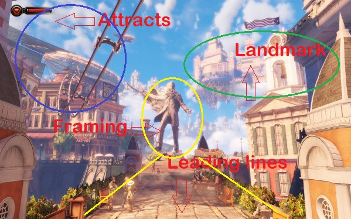
At launch the brand-new BioShock: Infinite (2013) managed to surprise a lot of people — it surprised with a development budget exceeding $100 million, an unheard-of sum at the time for single-player shooters, few of which climbed above a couple dozen. The top titles did of course approach those figures (Battlefield 4 — $100M, Grand Theft Auto V — $250M, Watch Dogs 1 — $70M). It surprised not with super-advanced technology that melted your GPU (the game was built on the engine of the previous installment) — though the picture is superb, even against the released heavyweights. Not with a mash-up of every genre under the sun; in essence the game became far more linear, closer to the ideas of the first part than the first part itself. The game surprised with the story it told — richly presented, genuinely gripping right up to the final twist, which in delivery can rival the best of books — painting a living world behind every opened door, as if turning a page, with vivid, well-written characters woven into the gameplay: sharp, repulsive, yet memorable. With plot twists in Disneyland scenery hiding a house of horrors behind a pretty facade.
I replayed it for two reasons. I was curious to look at the Switch port — a very weak little box performance-wise, on the level of an iPhone 6 or 7. And I wanted to refresh my memory of the techniques for interacting with the player through visual imagery and object functionality, from the master of double meanings, Ken Levine. As they say, to "raise the play-hours" — though here it's probably more accurate to say "refresh" them. Maybe some colleagues in gamedev will find it interesting too, and for the reader I can say a little more about the behind-the-scenes of making games, game design, the importance of psychology in games, guiding the player, and breaking the fifth wall.
A combination of small, thoughtful gameplay details, attention to the environment, interaction with the player on the edge of the fifth wall — things so lacking in modern immersive sims, which could learn a great deal from the technology of a decade-old game. But no — either pride won't let them copy it, or the knowledge is so complex that modern designers can't reproduce it. I replayed the game with enormous pleasure, first on YouTube and then on the Nintendo Switch — this is unambiguously the best BioShock to date; I hope the team at least won't botch the next part. And they might botch it: the game was nearly pulled from late-stage production due to funding problems, losing the entire old team along the way.
The principle of clarity
Examples of actions the player sees during play work best for atmosphere and story, even if you simply hand the player a gun and a set of abilities. The player is shown an NPC using the same mechanic they're expected to use, without spelling out its quirks and limitations. The mechanic, item, or ability becomes a tool for solving problems, and how the player applies that tool is entirely up to them. The very process of probing those limits becomes a mini-game within the game. The "Sky-Hook" with which the protagonist latches onto a rail also serves as an excellent melee weapon, with which you can even finish off an enemy stylishly — snap his neck or saw it right off.
And you're simply handed this hook, and in a couple of cutscenes over the next few minutes you're shown how it works — no pop-up messages, no separate buttons; it works the way it looks. And it has to be said that in BioShock most items work the way they look. But if you try to use them differently, the game won't stand in your way.
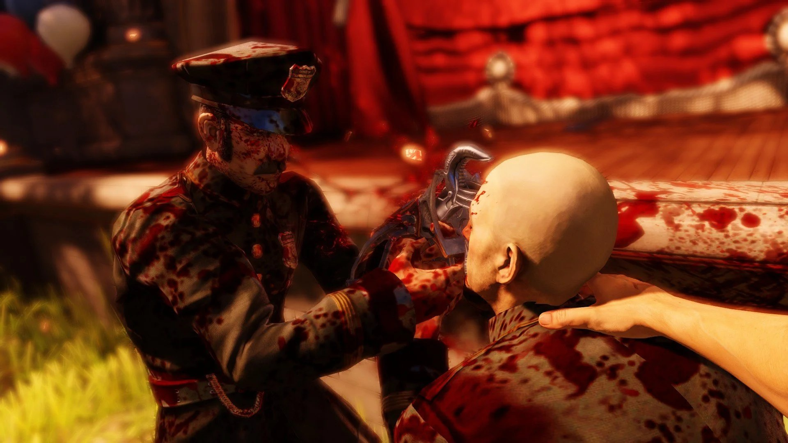
Developers often just show how this or that mechanic works without giving any explanation of where it came from. This technique appears fairly often in games, but rarely is it woven well into the overall narrative. Credit to the authors of BioShock — they managed to do it for the entire set.
First interaction with the fire ability (fire vigor)
The video clip is available in the original article on Habr.
At the same time the developers didn't forget to set up interactions between the various abilities — for instance, water puts out fire. And if you try to throw a fireball into a swamp, it simply fizzles out, but on a dry surface it explodes. And all these interactions are left for the player; instead of explaining the gist of an interaction with words or pictures, they often use small battle arenas and mini-bosses. And if a curious player goes to look where his fireball went, he'll see it still smoldering.
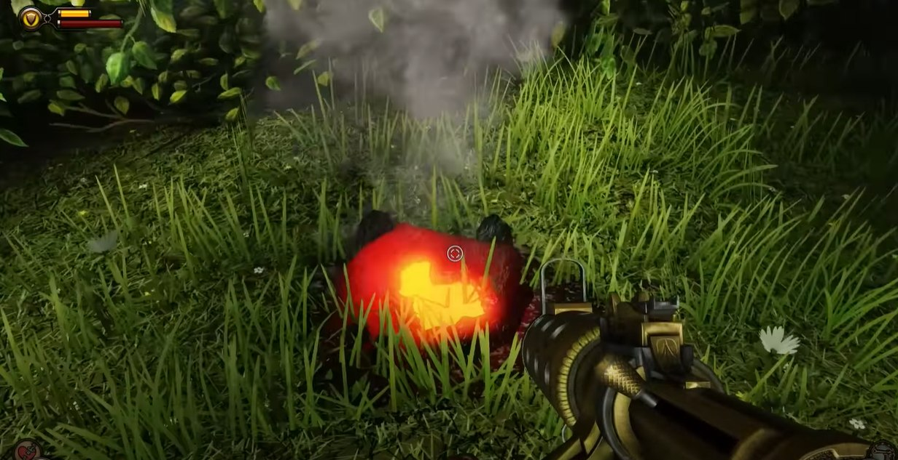
As a rule, such bosses require the use of a specific ability, but nothing stops the player from simply finishing them off with a weapon. Yet using the environment and mini-bosses for this kind of transparent tutorial is considered by many to be one of the game's signature features. For a designer, though, it's sheer torture, because the location turns out to be unique, you won't get to reuse it often in the game, and you have to invest as much time as into a third of a level.
The interaction of water and fire
The video clip is available in the original article on Habr.
Managing attention (fixed narrative)
Fixed narrative is the pre-prepared moments that arise during the game or in the gaps between its sub-locations. They can be cutscenes, interactive things like sheets of text, off-screen conversations or monologues, storytelling through the environment.
Despite the fact that this game is a linear, almost corridor shooter, with no ability to seriously influence the ending, the mechanisms for holding the player's attention were laid down back in the first part — both the widely known techniques like framing objects and highlighting the golden path.
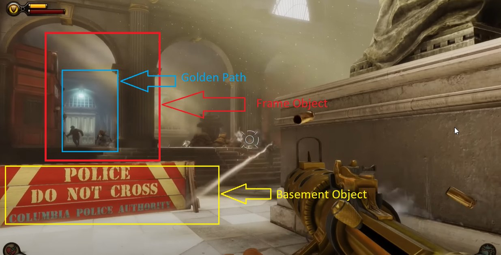
And also the then-new "functional pointers." These are small cutscenes or frozen stories that don't explicitly steer the player toward the needed point or action but draw their attention. And in BioShock: Infinite every location is strewn with such scenes; you'll practically never see explicit pointers in the form of text. Everything that could be done without captions and explicit pointers is moved into separate game events and cutscenes. This is a huge amount of work and a significant time cost. If redrawing a texture, repositioning and tuning an object in the scene takes, say, a day, then preparing a cutscene — the lines, the model movements, and the models themselves — go ahead and multiply that time by ten.
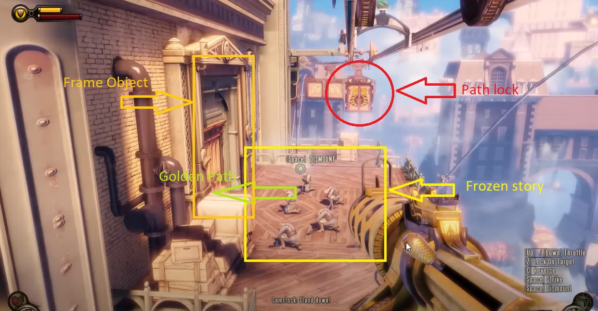
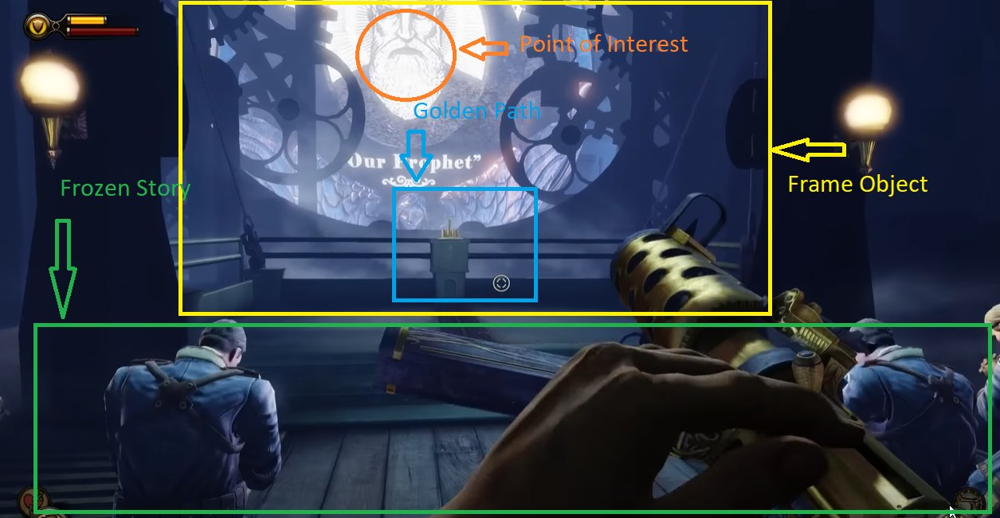
Visualizing a so-called choice (emergent narrative)
Emergent scenes are events and decisions that can differ greatly depending on the player's choice. Fixed and emergent narrative together make up the game narrative, which exists as a whimsical fusion of scripted, random, and transformative events (which were not foreseen by the developers). Because of the interactive nature of the game itself and the random behavior of users, game designers don't have full control over how the plot will take shape.
I liked the solution with the built-in decision-making interface. A game that, behind the facade, is a linear shooter — along the lines of "kill all the enemies and get a new ability so you can kill even more enemies so you can get…" well, you get the idea — manages to present situations and locations, like a pleasant stroll through a city painted in every color, where you have to make a decision. That was unusual. If only it weren't for one big BUT: none of your choices affect anything in the game. Like all of Levine's games, this one has not just a double but at times a triple meaning.
Games have trained us to make choices — visible or not, measurable at the end of a playthrough or affecting things right now. We expect that most games use choice to determine endings, which is what makes a game meaningful, gives the player the ability to influence events. Here, though, the game puts us in front of situations that really do look like a moral choice capable of swaying a good or evil ending, the way it's done elsewhere. But not here — in most such situations there was no effect on the game at all; the player is just as much a pawn in the game as the NPC standing nearby, and the realization of this fact arrives at the end. This altogether casts doubt on the very idea of the significance of choice in this particular game, and in games in general, breaks that fifth wall, and shows that players can be played too.
Designers know all about symmetrical scenes, and they also know that most people are right-handed, so they'll intuitively pick objects placed on the left side of the screen. By the way, prices on tags are written on the left for the same reason — so as not to give your brain the slightest opportunity to back out of the purchase. By the way, if you play a pacifist and don't kill literally everyone you come across, you won't get the shoulder blade.
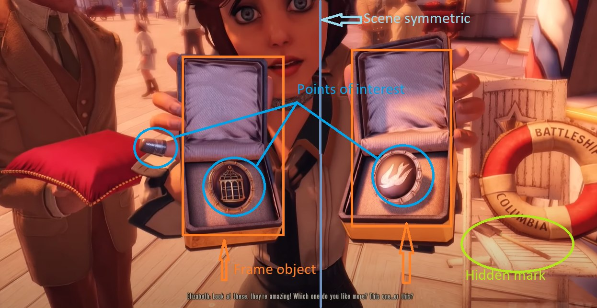
So on the left side, the one most people will want to choose, sits the inconvenient option. The cage that symbolizes this whole flying city we're trying to escape from, and right there too is a warning about the consequences of the choice, in the form of a missing pinky finger.
A game that across two installments taught us the importance of choice shatters those expectations, depriving the player of influence over anything, and here the third meaning emerges — something Levine himself spoke about in one of his interviews: can a moral choice even exist in games with a narrative predetermined by the designer? And this raises an altogether strange question: is the player an autonomous entity, with his decisions and choices his own, or is he just another NPC with greater capacity for game interaction, but still dancing obediently under the watchful direction of the game designer?
Although maybe it's all just over-engineered, and the designers simply couldn't be bothered to write different endings?
Non-random randomness (transformative narrative)
Transformative narrative is a concept that describes the process of interaction between mechanics that was not originally built in by the developers. The term is used in various contexts to describe the possible behavior of NPCs and objects and their reaction to various events — for example, an explosion caused a barrel to fall, which damaged an NPC; the player seemingly had nothing to do with it, but they have to react in accordance with the conditions laid down. At the heart of transformative narrative lies the idea that stories can substantially influence one another, giving rise to new stories.
Additional activities — searching for upgrades, carnival games, rummaging through Columbia's trash bins — imperceptibly move the player from one point of interest to another. By laying out the simplest activities in small portions, the designers create the impression that the player found some things completely by chance, all on their own.

And every player will tell their own story, with unique combat situations that depend on a particular strategy. And someone won't get to ride the carousel at Soldier's Field and will lose part of the content. These are all those very conditions that designers constantly fret over, so that the "millions of worlds, different and alike" of BioShock's stories come together into a single playthrough unique to each player. Not in this BioShock, as it turned out. Whereas other games try with all their might to show unique reactions to the player's actions and make their choice meaningful, Infinite simply mocks all those notions, putting the player on the same level as an NPC, helpless before the plot and the final denouement — there's only one, and none of your choices affect anything.
A double/triple layer of storytelling
What struck me most was the complexity of the storytelling structure overall, and it's not only in the cinematics and cutscenes. The whole surrounding picture of "progressive" Columbia is just scenery — you only have to step into a back alley. Painted airships sail across the sky, joyful children run along the beach, a festival plays in every color. And right there around the corner: religious fanaticism, dialogues about Columbian — read American — exceptionalism, the inevitability of economic inequality, and postcolonial theory in the conversations. In short, everything as in a quality dystopia — what else did you expect from Levine? Recognize the numbers?
Bottom line
You'd think a linear shooter should have everything thought through down to the smallest detail — from the visual design of the characters and interactive objects to the multilayered structure of the story world. It's not only a simulation living by its own rules, but also a facade for double and triple meanings. And the rich variability of interactions with the surrounding world suddenly becomes an opportunity to break the fifth wall between player and designer. I think the game will be a good example for designers who want to make games that stand out from the stream of identical, cookie-cutter evening shooters. Ten years is simply an eternity for a game, which makes it all the more important to revisit good solutions, so as not to repeat mistakes in your own projects.
A few more screenshots for nostalgia
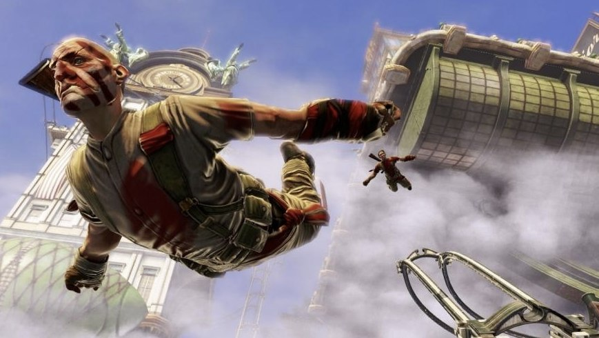
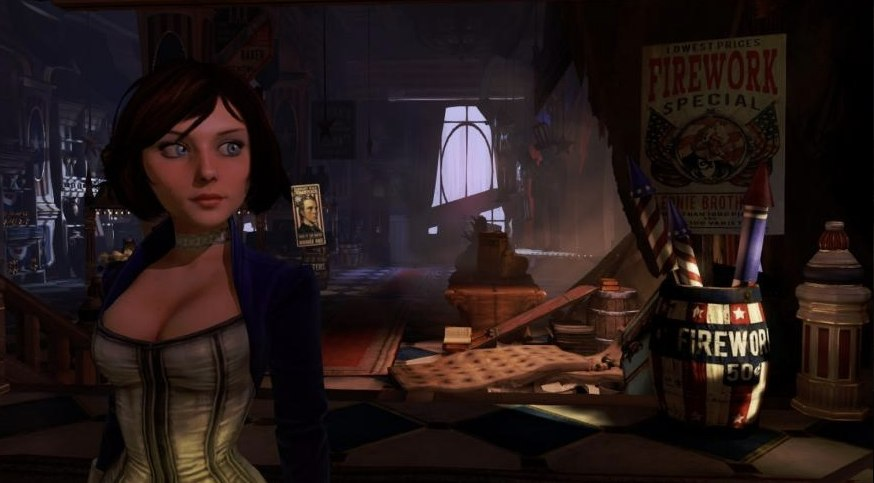
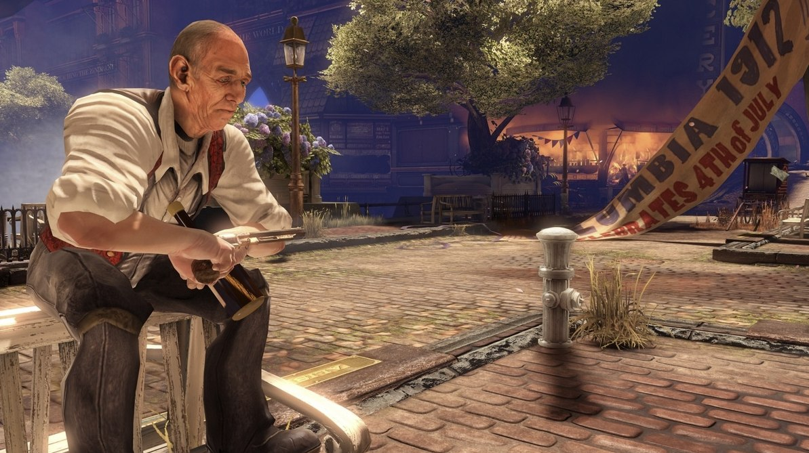
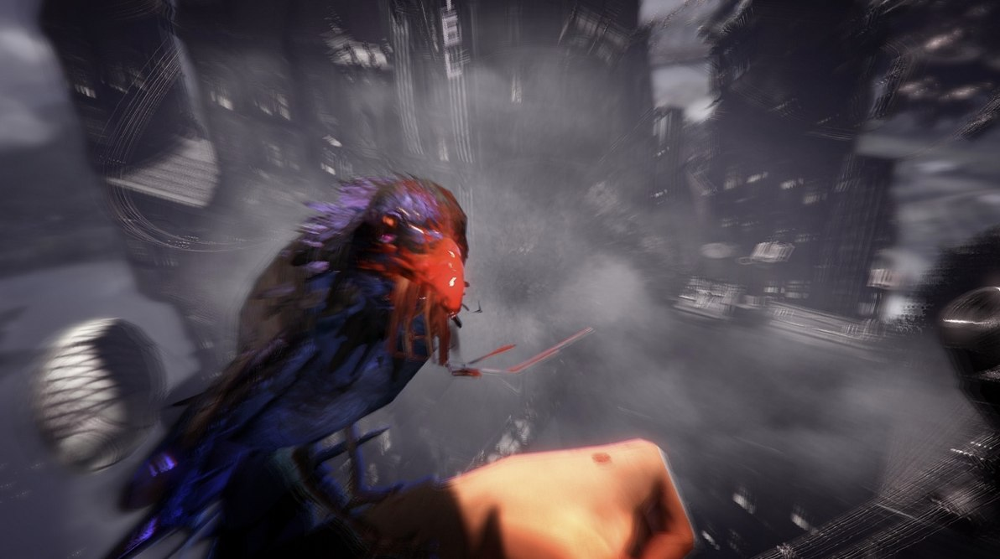
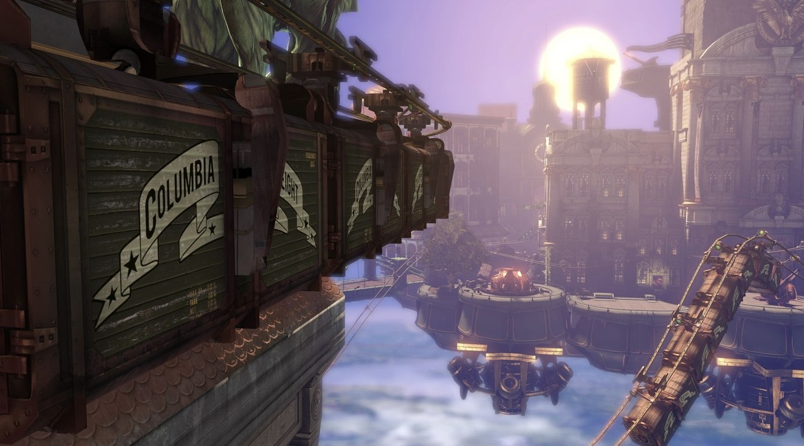